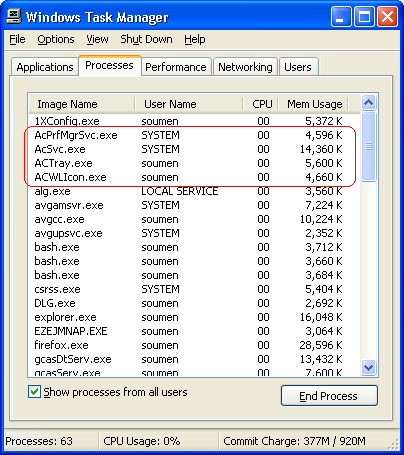

Lenovo thinks nothing of writing a network switching utility for a laptop with a service ("demon" for the winblows-challenged) that hogs over 29 megabytes, even if you are not changing network settings! Just the systray icon costs you 10MB!
I cannot recall if I sent in a complaint or not, but I just got this reply from Lenovo, saying "take it or leave it" as only corporations can.